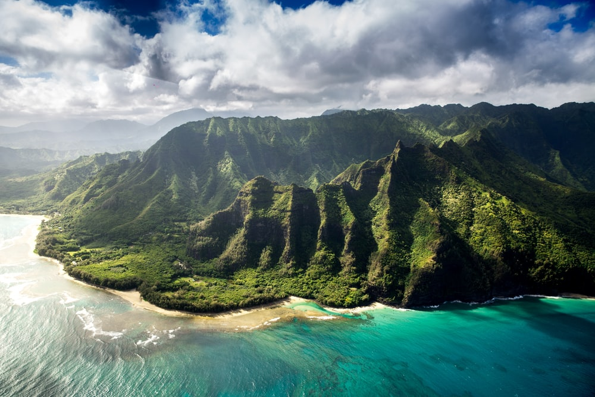

Hawaii

The mounatains of Hawaii are a wonderful place to explore with your family and friends. Especially the mountain Kawaikini, it's luscious greenery and it's fresh mountain air is an escape from your busy everyday life. The Kuilau Ridge Trail is a perfect two-hour adventure. It’s short but because you are already elevated so high from the drive, the views are awesome from the first moment. A small muddy trail leads you along a winding path that cuts in and out along the ridge for two miles. are awesome from the first moment. The trees and plants on the Kuilau Ridge Trail are out of this world. Huge ferns blanket the lower level of the forest, while enormous trees tower above you as you make your way along the path. It’s a classic Hawaii hike that has you feeling like you are on the set of Jurassic Park.
If the mountain hikes and vibrant wildlife interest's you here are some flight's: Diala flight's, Skyscanner flight's and Opodo flight's
Singapore

The Marina bay sands is the perfect combination of concrete giants and alluring wildlife. Even though the city was opened 30 years ago it still represents an innovative modern day city and with the added plus of vivid ecosystem. Whilst at Marina bay sands there are lots of activities like going on a shopping spree through all of the local businesses and buying an aray of exquisite jewellery. Or, even trying the delicious native foods all specially made to make your mouth water at the smell. You could also have a walk around the city seeing all the new types of plants and animals you can discover.
If the bustling city and the exotic greenery interest's you here are some flight's: British airways flight's, Diala flight's and Royal Dutch Airline flight's
Barcelona
Soaring above Barcelona's cityscape, the Sagrada Família will be the world's tallest church upon completion. This 130-year labor of love, dreamt up by Antoni Gaudí, is one of the world's most controversial basilicas, but also one of the most visited. Three million tourists descend upon the place each year to gawk at the architectural achievement that has brought nature, light and religion together into one stunning ensemble piece. The interior is like a giant jigsaw puzzle with each new architect's style blending into the rest of Gaudí's vision.
If the extravagant architecture and the elegant artwork interest's you here are some flight's: veuling flight's, Jet2 flight's and Diala flight's